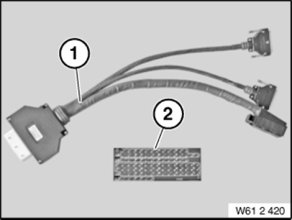

61 2 420 Adapter Cable
61 2 420 Adapter Cable
0494882
Minimum set: Measuring and testing equipment
MP

NOTE: (Adapter cable set (engine) consisting of adapter cable and cover plate for test box) 88-pin test cable (61 2 421) Cover plate for assignment of modules (61 2 422) For engines: N46, N52 and S85
SI number: 02 05 04 (120)
Consisting of:
1 = 0494894 Adapter cable
NOTE: (Adapter cable 88-pin for engine control unit) Individual cable is discontinued; now only available via set 61 2 420 = 0494882 as of 01 June 2011.
2 = 0494895 Plate
NOTE: (cover plate for test box) For assignment of individual modules